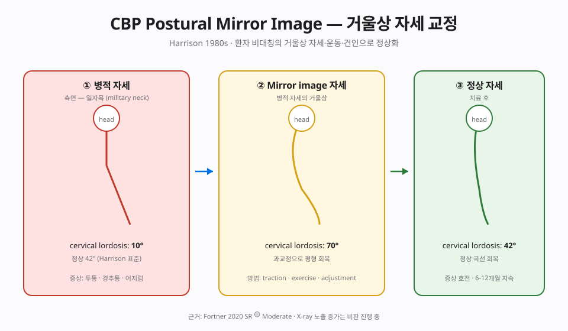
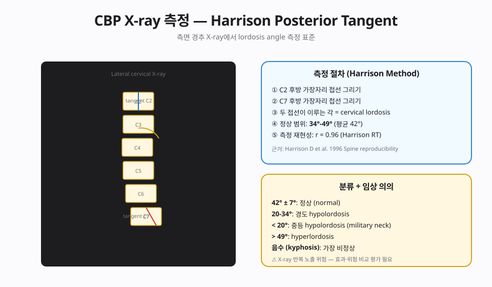

📊 핵심 다이어그램
이 챕터의 핵심 개념을 시각화한 도식.


📘 편집 원칙
근거 기반 의학(EBM) 관점. Vitalism · 전신질환 인과론 · AK 진단 확장 · Cranial rhythm 등 No evidence 주장은 🔴 제외 또는 비판적으로만 언급합니다.
개요
본 챕터가 다루는 기법
Harrison 부자가 수학·선형대수 기반으로 정립. Mirror image® 교정(변형 방향의 반대로 자세·운동·견인). Denneroll 3D 견인. 경추·요추·거북목 구조 재활.
근거 수준 한눈에
근거
🟡 Moderate — 경추·요추 lordosis 회복 case series
이론·기전
모든 카이로프랙틱 기법은 Afferentation → 중추 처리 → Efferentation 프레임(Chapter 2 참조)에서 해석합니다. 이 기법이 어떤 구심성 입력을 만들고 어떤 원심 출력을 조절하는지.
창시자와 역사적 맥락
Donald D. Harrison(1944-2012)은 1980년대 후반부터 Chiropractic BioPhysics(CBP)을 정립했습니다. 카이로프랙틱 기법 중에서도 X-ray 영상 기하학(spinal geometry)에 가장 정량적·공학적으로 접근하며, 세 요소를 결합합니다 — (1) 표준화된 자세 X-ray 분석, (2) 병리 자세의 거울 대칭(mirror image) 교정 추력, (3) 가정용 traction unit과 자세 운동을 통한 장기 재훈련. Harrison sagittal cervical model(C2-C7 lordosis ~34°)과 같은 ideal posture 기준은 측정 가능한 외부 지표를 제시했다는 점에서 EBM 평가가 가능한 카이로프랙틱 기법으로 인정받습니다.
생체역학 — Mirror image와 견인
CBP의 핵심은 병리 자세의 거울 대칭 방향으로 부하를 반복 적용하는 것입니다. 예: forward head posture가 있으면 traction unit으로 머리를 후방·신전 방향으로 견인, 같은 방향의 mirror exercise를 자가 시행. 견인은 저강도 장시간 (10-20분 sustained, 수 kg) 부하로 ligament·디스크·근육의 점진적 재형성을 유도합니다. Davis's law(연부 조직의 적응적 재배열) 개념에 기반합니다.
신경생리 — Afferentation → Central → Efferentation
- 🟢 Afferentation — 장시간 부하로 Type III(Ruffini) 수용기와 근방추가 새 패턴을 학습. 시각·전정·고유감각 통합 시스템이 새로운 자세를 reference로 삼도록 점진적 재훈련.
- 🟡 중추 처리 — Motor cortex와 소뇌에서 자세 패턴의 long-term adaptation. 만성 경추 통증의 cervical proprioception 결함(Treleaven 등)을 보정하는 가설.
- 🟢 Efferentation — 자세 유지 근육의 톤·근방어 패턴 변경, 기능 활동 향상.
🟡 근거 수준 정리
CBP는 X-ray 기하학적 변화(자세 각도)는 비교적 잘 입증되어 있으나 (다수의 case series·소규모 RCT), 증상·기능 호전과의 연결은 SR에서 이질적입니다. 일부 SR은 만성 경추통과 두통 호전을, 다른 SR은 유의한 차이를 보이지 않습니다. 이상적 자세 회복이 모든 만성 통증을 해결한다는 주장은 과장이며, '영상 변화 ≠ 증상 변화'의 가능성을 환자에게 설명해야 합니다.
🔴 X-ray 노출 정당화
CBP는 분석·추적에 X-ray를 반복적으로 사용합니다. 모든 영상은 임상적 필요(red flag·중대한 자세 이상)가 명확할 때만 시행하고, ALARA 원칙(As Low As Reasonably Achievable)을 따릅니다. 자세 회복 목적의 '추적 X-ray' 횟수를 합리적 최소로 제한하고, 환자에게 누적 방사선량 정보와 동의 과정을 충실히 합니다.
임상 적용
적응증
- 측정 가능한 자세 이상이 동반된 만성 경추통·요통 (forward head posture, 경추 lordosis 소실, hyperkyphosis 등)
- 증상보다 영상 자세 회복이 의미 있는 case (장기적 보존 치료)
- 특발성 청소년기 척추측만(IAS) 보조 치료 (Cobb 각도 변화 보고는 있으나 SR 수준 근거는 제한적)
- 외상 후 sagittal imbalance 의 보존적 회복
치료 protocol
- 영상 평가 — 표준화된 자세 X-ray(예: APOM, lateral cervical/lumbar) 로 ideal posture와의 편차 측정. 임상적 필요가 분명할 때만 시행.
- Mirror image adjustment — 병리 자세의 반대 방향으로 specific HVLA 또는 instrument-assisted 자극. Diversified/Activator 추력과 동일한 안전 원칙 적용.
- Mirror image traction — 클리닉에서 traction unit(harness, pulley 등)으로 10-20분 sustained 부하. 환자 통증·신경 증상 모니터링.
- Mirror image exercise — 가정에서 자가 시행. 자세 운동 + 강화 (cervical retraction, prone Y/T 등). 일관성이 관건.
- 추적 — 4-12주 간격으로 임상 평가, 영상 추적은 임상적 필요에 한해.
🔴 안전 · 금기 · 다학제 협진
금기
- 절대 금기 (HVLA 부분) — Manual SMT와 동일: CES, 진행성 신경학적 결손, 진행성 골절·종양·감염, 환축관절 불안정 등.
- 견인 금기 — 진행성 척추 종양·감염, 미세 골절, 동맥류, 신경학적 결손 진행기, 임신 중 후기 부하. 골다공증 진행 단계에서는 부하 강도와 시간을 보수적으로.
- 방사선 안전 — 임신 중 X-ray는 절대 피하거나 산과적 위험·이익 평가 후. 모든 영상은 ALARA, 추적 영상은 임상적 필요가 분명할 때만.
🔗 다학제 협진
척추측만은 정형외과(특히 Cobb 각도 25° 이상)와 협진. 신경학적 결손이 있으면 신경외과 평가. 자세 운동은 물리치료(PT)와 협력 시 성과가 좋습니다. CBP는 측정 가능한 자세 회복이 임상적으로 의미 있는 환자에서 보존적 옵션의 하나로 위치시키고, 영상 회복 자체를 목표로 삼지 않도록 환자 교육이 중요합니다.
근거 수준
| 적응증 | 근거 수준 | 비고 |
|---|---|---|
| 본 기법 주된 적응증 | 🟡 Moderate — 경추·요추 lordosis 회복 case series | 상세는 강의록 MD 참조 |
| 🔴 전신질환·내장·자폐·ADHD·천식·고혈압 치료 | 🔴 No evidence | Cochrane·PubMed 근거 없음 |
🔴 비판적 시각
증례 중심 근거의 한계
PMC 60례 case series 등 근거는 있지만 RCT 부족. Dynamic Chiropractic Spinal Graffiti — Harrison 모델의 비판론 존재. 방사선 측정 신뢰도는 🟡 Moderate(Harrison et al. 연구).
상세 비판 문헌 리뷰와 과장 vs 근거 비교표는 강의록 MD 확장판에서 다룹니다.
강의 자료
11/11 자료 준비 완료.
📖 강의록
🎧 팟캐스트
🎥 AI 동영상
🎴 PPTX 슬라이드 (4개 × 15장)
15장 🎴Part 2 · Aff/Def/Eff ✅ 준비 완료
15장 🎴Part 3 · Assessment ✅ 준비 완료
15장 🎴Part 4 · 임상·비판 ✅ 준비 완료
15장
📄 Report Markdown
NotebookLM 자동 생성 📄Report 2/4 ✅ 준비 완료
NotebookLM 자동 생성 📄Report 3/4 ✅ 준비 완료
NotebookLM 자동 생성 📄Report 4/4 ✅ 준비 완료
NotebookLM 자동 생성
NotebookLM 노트북: 열기 →
🎬 레거시 시연 영상 (사용자 직접 시연)
2015년 KOA 학회 및 임상 시연 당시 사용자가 촬영한 원본 영상입니다. 참고용 · 직접 시연 중심이므로 이론 설명은 챕터 본문을 참고하세요.